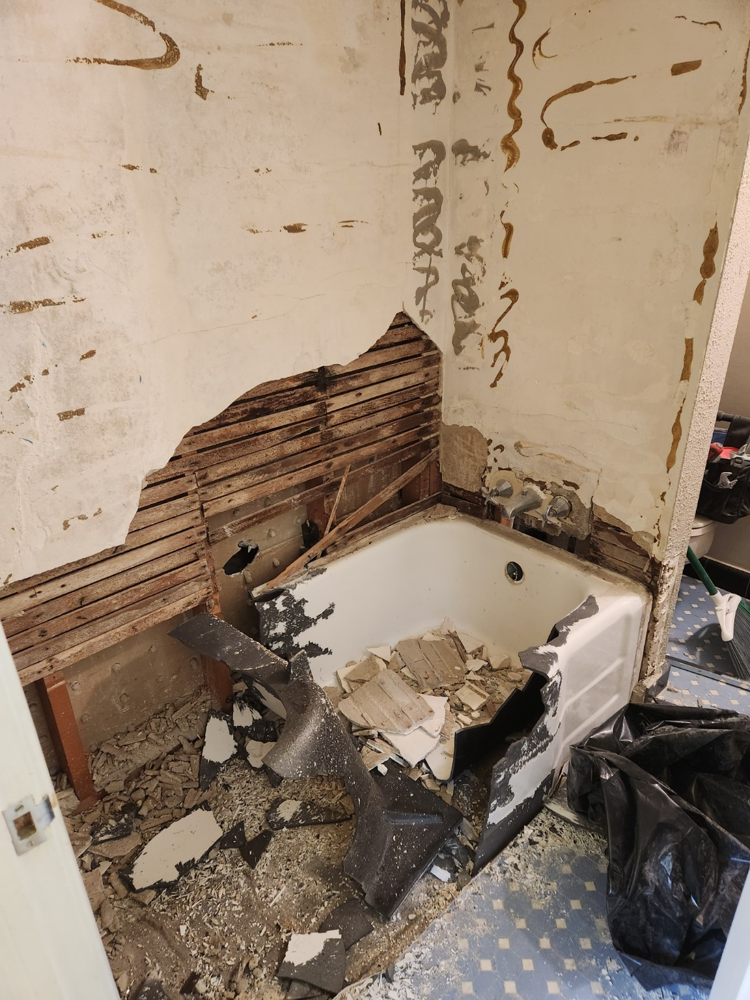
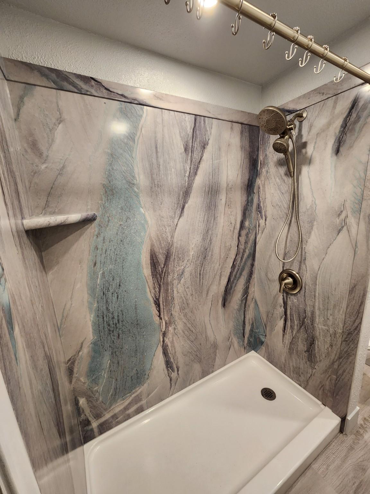
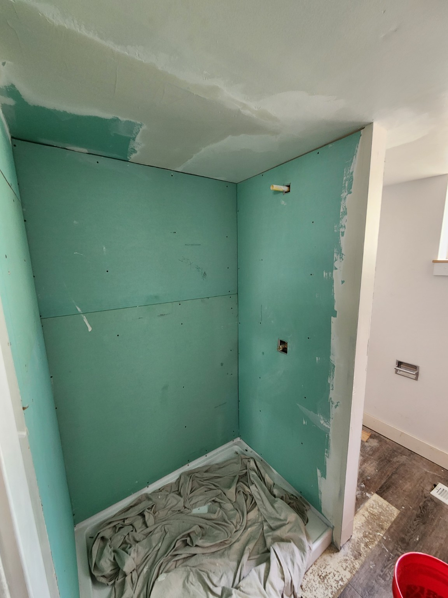
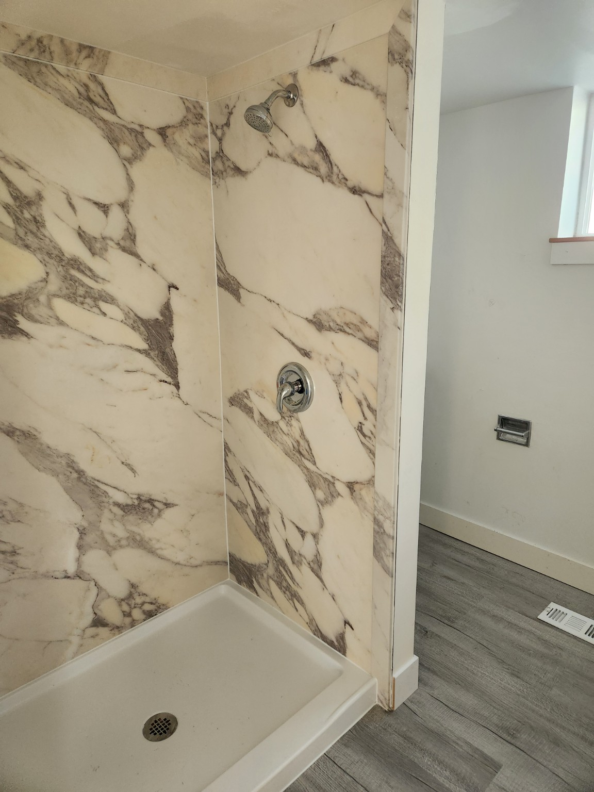

If you're researching a shower remodel, you've probably already run into the same options everyone talks about: tile, one-piece fiberglass units, or those big box surround kits. What you might not have encountered yet is the option that's quietly become the most popular upgrade I install — seamless shower wall panels.
I want to give you the real story. Not marketing copy. Not a pitch. Just what I've seen after doing this work for 25+ years in Salt Lake County bathrooms.
I install both tile and shower wall panels depending on what's right for the customer. This guide is my honest take on both — when each makes sense, and when one is clearly the better call.
A Quick History: How We Got Here
For most of the 20th century, there were really only two choices for shower walls: ceramic tile or fiberglass. Tile was the premium option — beautiful, durable, customizable. Fiberglass surrounds were the budget option — affordable, fast, and fine for a few years until the surface started crazing and the color faded.
The problem with tile that nobody liked to talk about was grout. Grout is porous cement. It absorbs moisture, soap, and minerals from hard water (which almost everyone in the Salt Lake Valley has). Within a year of installation, grout lines start discoloring. Within five years, mold and mildew become a real battle. Within 10–15 years, the grout starts cracking and failing, and you're looking at a re-grout or a full retile.
The search for something better led to the development of solid surface shower panels — large composite sheets that cover shower walls without any grout at all. Early versions were utilitarian and plasticky-looking. But as digital imaging technology matured through the 2000s and 2010s, manufacturers figured out how to embed ultra-realistic stone imagery into the composite material itself.
Today, the best panels look genuinely indistinguishable from real stone to most people standing in a showroom — or in your bathroom. The technology caught up with the aesthetic.
"I grew up doing tile work. My father did tile work. I still love a beautifully laid custom tile shower. But I've also spent years scraping failed grout, opening up walls with hidden water damage behind old tile surrounds, and having conversations with homeowners who are frustrated that their 'nice' bathroom already looks dirty. Grout is the weak link in tile — and most homeowners don't find out until it's too late."
What Shower Wall Panels Actually Are
Shower wall panels — at the good end of the market — are large-format composite sheets, typically 4–5 feet wide and floor-to-ceiling height, that get adhered directly to your shower walls. Instead of hundreds of individual tiles with grout between them, you have three or four seamless pieces that meet at the corners with color-matched caulk.
The surface is non-porous. Nothing penetrates it. Mold, soap scum, and hard water minerals sit on top of the surface rather than soaking in — which means wiping the shower down takes about 60 seconds and actually works.
The best panels on the market use a multi-layered composite construction. At Devco, we install Sentrel by Design Imaging — a Utah-based manufacturer that's become the standard for professional installers who care about quality. Here's what makes them different from cheaper panel options:
- They start with real stone slabs — hand-selected marble, travertine, and granite from quarries around the world
- Those slabs get scanned at ultra-high resolution, capturing every vein, variation, and texture detail
- That image is embedded into the composite material as one of multiple layers — not printed on top
- The result is panels that are twice as thick as standard acrylic alternatives and look like actual stone
- They're manufactured in Orem, Utah — meaning fast delivery, consistent quality, and a local company with accountability
Sentrel ships from Orem — typically 7–10 business days from order to delivery. That's a huge scheduling advantage over imported materials that can take weeks and arrive with damage.
The Grout Problem Nobody Warns You About
Let me walk you through what actually happens to a standard tiled shower in a Salt Lake County home over time — because this is what I see every day on job sites.
Year 0–1: It Looks Perfect
Fresh grout is beautiful. Clean white or gray lines, crisp tile edges. This is what you paid for.
Year 1–3: The Discoloration Starts
Hard water minerals, soap residue, and body oils begin penetrating the grout. Even with regular cleaning, lines start going gray or tan. Products help temporarily but don't stop it.
Year 3–7: Mold Takes Hold
In corners and horizontal grout lines especially, mold finds a permanent home. Bleach gets it temporarily but doesn't kill the roots embedded in the porous grout. Many homeowners start resenting their bathroom at this stage.
Year 7–15: Cracking and Failure
Grout cracks as the home settles and the substrate flexes. Hairline cracks let water through. Behind the tile, backer board gets wet. Eventually the subfloor gets involved. Many homeowners don't notice until they step through the floor or smell mold from another room.
Year 10–15: Re-Tile or Repair
Full demo, potential subfloor repair, new backer, new tile, new grout. You're essentially starting over — and the cycle begins again.
"I find rotted subfloor in probably one out of every four or five full gut remodels I do. The homeowner has no idea. They thought their shower looked fine — maybe a little dingy — and then we pull the tile and find years of hidden water damage working its way through the floor structure. In almost every case, it started with a failing grout line."
Real Devco Project — Sentrel Shower Conversion
No-Grout Shower Upgrade

Real Devco Project — Shower Prep to Finished Panels
Waterproof Prep · Finished Panel System

So Which Should You Choose?
Here's my honest answer: it depends on what matters most to you.
Choose Custom Tile If...
- You want the absolute highest-end, one-of-a-kind look — no panel fully replicates the depth and variation of hand-laid artisan tile
- You're doing a significant master bathroom renovation and ROI at resale is a priority
- You have a large budget (typically $12,000–$20,000+ for a full custom tile shower) and 2–4 weeks of timeline
- You're willing to commit to proper grout sealing and maintenance over time
Choose Sentrel Wall Panels If...
- You want a genuinely nice-looking shower at a realistic budget ($4,500–$8,500 installed)
- You're tired of cleaning grout and want something truly low-maintenance
- You need the bathroom functional fast — most Sentrel installs are done in 1–3 days
- You're doing a rental property or secondary bathroom where durability matters more than luxury
- You're doing an accessible conversion — the seamless surface is ideal for aging-in-place applications
- Your existing tile is solid and you want to install over it rather than pay for full demo
Don't confuse premium composite panels like Sentrel with the cheap acrylic surround kits at Home Depot or Lowe's. Those are thin, plasticky, and look it. Sentrel panels are twice the thickness of standard acrylic, use real stone imaging, and come with a warranty. The difference in quality is immediately visible.
Why Devco Installs Sentrel Specifically
There are a lot of shower panel products on the market. I've worked with several of them. The reason I now specifically install Sentrel comes down to a few things I can't compromise on:
It's made in Utah. Sentrel manufactures out of Orem — about 45 minutes from West Valley City. That means I can get panels in 7–10 business days, not 4–6 weeks. It means when something needs to be addressed, there's an actual local company with a phone number and accountability. That matters to my customers and to me.
The imaging is genuinely exceptional. The process of scanning actual stone slabs at high resolution and embedding that into the composite produces results that other panel manufacturers haven't matched. When you hold a Sentrel panel next to the real stone it's based on, the resemblance is remarkable.
The thickness and build quality are real. Sentrel panels are built to last the life of the home. They're used in hotel renovations and multi-family housing projects precisely because developers need something that survives heavy, continuous use without maintenance callbacks.
The complete system. Sentrel makes matching shower bases with NanoGrip™ non-slip surfaces, built-in niches, shelves, and accent trims — all coordinated to the same stone pattern. The end result looks like a cohesive design, not an assembled collection of mismatched parts.